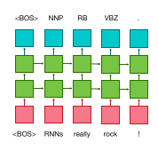
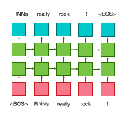

Machine Translation¶
Neural Machine Translation (NMT) is the default and original task for OpenNMT. It requires a corpus of bilingual sentences for instance as available on Opus for a very large variety of domains and language pairs.
Training a NMT engine is a 3 steps process:
- Tokenization
- Preprocessing
- Training
Step by step process is described on the quickstart page and full process to train large system is described on the forum here.

Summarization¶
Summarization models are trained exactly like NMT models. However, the nature of the training data is different: source corpus are full length document or articles, and target are summaries.
This forum post details how to train and evaluate a summarization model.
Image to text¶
Im2Text, developed by Yuntian Deng from the Harvard NLP group, is implementing a generic image-to-text application on top of OpenNMT libraries for visual markup decompilation. The main modification to the vanilla OpenNMT is an encoder introducing CNN layers in combination with RNN.
Speech recognition¶
While OpenNMT is not primarily targetting speech recognition applications, its ability to support input vectors and pyramidal RNN makes possible end-to-end experiments on speech to text applications as described for instance in Listen, Attend and Spell.
See for instance monophone speech recognition with OpenNMT on the forum.

Sequence tagging¶
A sequence tagger is available in OpenNMT. It shares the same encoder architecture as a sequence-to-sequence model but does not need a decoder since each input is synced with an output. A sequence tagger just needs an encoder and a generation layer. Sequence tagging can be used for any annotation tasks such as part of speech tagging.

To train a sequence tagger:
- preprocess the parallel data with source and target sequence having the same length (you can use the
-check_plengthoption). - train the model with
-model_type seqtagger - use the model with
tag.lua
Language modelling¶
A language model is very similar to a sequence tagger. The main difference is that the output "tag" for each token is the following word in source sentence.

- preprocess the data with
-data_type monotext - train the model with
-model_type lm - use the model with
lm.lua